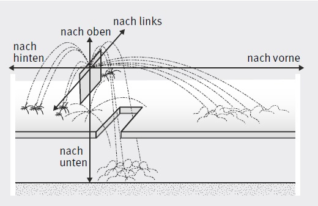
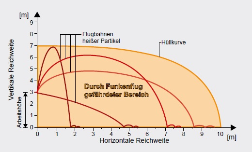
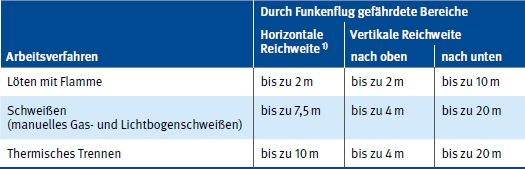
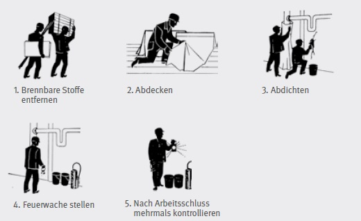
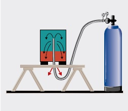
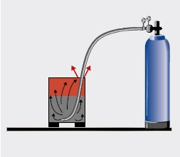
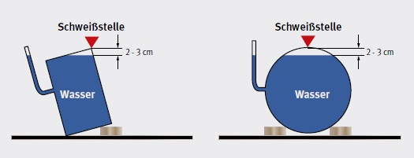
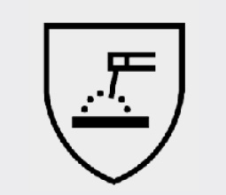
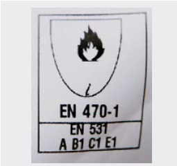

Bei den Lichtbogenverfahren sind immer Zündquellen vorhanden:
Funken können sich in alle Richtungen ausbreiten, auch wenn einzelne Verfahren (z. B. thermisches Trennen) den Funkenflug in eine bestimmte Richtung begünstigen. Funken und Schweißspritzer können brennbare Materialien in Brand setzen und explosionsfähige Stoffe zünden. Dies gilt nicht nur für Materialien im unmittelbaren Schweißbereich, sondern auch in angrenzenden Bereichen, denn Funken und Spritzer können auch durch unscheinbare Öffnungen in benachbarte Bereiche gelangen (siehe Abb. 8-1).

Abb. 8-1 Ausbreitungsverhalten von Funken, Metall- und Schlackepartikeln bei Schweißarbeiten
Ausdehnung und Form der durch Funkenflug gefährdeten Bereiche ergeben sich aus den Flugbahnen der heißen Partikel (siehe Abb. 8-2).

Abb. 8-2 Ausdehnung des durch Funkenflug gefährdeten Bereiches beim thermischen Trennen in einer Arbeitshöhe von 3 m
Die Angaben über die Reichweiten sind Anhaltswerte zur Abschätzung des Funkenflugs. Sie berücksichtigen die Gesamtreichweite und das Zündvermögen heißer Metall- und Schlacketeilchen bei fachgerechter Ausführung der Arbeiten und ungünstigen Arbeitsbedingungen (siehe Tabelle 5).
Tabelle 5 Anhaltswerte zur Abschätzung des Funkenflugs

1) Reichweite bei üblicher Arbeitshöhe von ca. 2 bis 3 m
Übliche Verfahrensstörungen wurden dabei berücksichtigt. Die Reichweiten für den horizontalen Bereich umfassen auch mögliche Ablenkungen der Partikel aus ihrer Flugbahn durch Hindernisse in der Umgebung (z. B. Gerüste, Geländer). Die Reichweitenangaben für thermisches Trennen schließen auch Schleifarbeiten ein. Raumbegrenzungen und wirksame Abschirmungen können die durch Funkenflug gefährdeten Bereiche beschränken. Bei Arbeitshöhen über 3 m ist als Richtwert anzunehmen, dass sich mit jedem Meter zusätzlicher Arbeitshöhe der Bereich in der Horizontalen um etwa 0,5 m vergrößert.
Besonders heimtückisch ist die Gefahr, dass sich Brände noch viele Stunden nach dem Ende einer Schweißarbeit entwickeln können. Deshalb müssen vor Beginn schweißtechnischer Arbeiten, besonders bei Montagen und Reparaturen außerhalb betrieblicher Schweißwerkstätten, der Arbeitsbereich und seine Umgebung besichtigt werden, um geeignete Maßnahmen auch gegen Schwelbrände treffen zu können.
Durch bauliche Verkleidungen sind brennbare Stoffe (z. B. Dämmstoffe, Elektroinstallationen) häufig nicht sichtbar. Schweißarbeiten in Kaufhäusern, Lagerräumen und Betrieben, in denen brennbare Stoffe lagern, haben schon oft zu Großbränden geführt. Vor Beginn der Schweißarbeiten sind die Brandlasten durch vollständiges Entfernen des brennbaren Materials zu beseitigen. Dabei dürfen Papierreste, Holzwolle, Späne, Fasern oder Staubansammlungen, aber auch brennbare Stoffe und Gegenstände, die fest mit dem Gebäude verbunden sind (z. B. Verkleidungen oder Isolierungen), nicht übersehen werden. Sind die Ansammlungen brennbaren Materials nicht zu vermeiden, muss die Brandgefahr durch Abdecken des gefährdeten Materials und Abdichten, z. B. von Mauerdurchbrüchen, beseitigt werden. Es ist vor Beginn der Schweißarbeiten zu prüfen, ob eine Brandwache mit geeigneten Feuerlöscheinrichtungen erforderlich ist. Weiterhin muss festgelegt werden, ob die Arbeitsstelle und ihre Umgebung auch nach Beendigung der Schweißarbeiten beobachtet werden muss.
Die erforderlichen Maßnahmen sind im Rahmen der Ermittlungen zur Gefährdungsbeurteilung zu dokumentieren. Bei regelmäßig wiederkehrenden, gleichartigen schweißtechnischen Arbeiten, bei denen sich eine Brandentstehung durch das Entfernen brennbarer Stoffe und Gegenstände nicht verhindern lässt, können diese Maßnahmen in Betriebsanweisungen festgelegt werden. Außerhalb dieser Bereiche muss bei Brand- und Explosionsgefahr ein Erlaubnisschein für Schweißen und verwandte Verfahren (Schweißerlaubnis) erstellt werden (siehe Anhang 1). Werden die Schweißarbeiten als Dienstleistung von einem anderen Unternehmen durchgeführt, sind die erforderlichen Maßnahmen zwischen dem Auftraggeber, der die speziellen Gegebenheiten seines Unternehmens kennt, und dem Auftragnehmer, der die verfahrensspezifischen Gefährdungen kennt, abzustimmen. Das Ergebnis dieser Abstimmung ist im Schweißerlaubnisschein zu dokumentieren und der ausführenden Schweißfachkraft zur Kenntnis zu geben. Die Sicherheitsmaßnahmen müssen unter Beachtung der jeweiligen Bedingungen mit dem Auftraggeber abgestimmt und in einer Schweißerlaubnis schriftlich festgelegt werden.
Sämtliche Sicherheitsmaßnahmen dürfen erst aufgehoben werden, wenn keine Zündgefahr mehr besteht.
Lassen sich brennbare Stoffe und Gegenstände aus baulichen Gegebenheiten oder betriebstechnischen Gründen nicht vollständig entfernen, sind zum Verhindern einer Brandentstehung folgende ergänzende Sicherheitsmaßnahmen erforderlich:
Abdecken verbliebener brennbarer Stoffe und Gegenstände z. B. durch Sand, Erde, geeignete Pasten, Schäume oder schwer entflammbare Tücher. Ein Feuchthalten der Abdeckung verbessert deren Wirkung (Abb. 8-3, Nr. 2)
Abdichten von Öffnungen zu benachbarten Bereichen (z. B. Fugen, Ritzen, Mauerdurchbrüche, Kanäle, Rohröffnungen, Rinnen, Kamine, Schächte) mit Lehm, Gips, geeigneten Massen oder feuchtem Sand (Abb. 8-3, Nr. 3)
Bereitstellen geeigneter Feuerlöscheinrichtungen entsprechend der Brandlast (z. B. wassergefüllte Eimer, Feuerlöscher oder angeschlossener Wasserschlauch); Überwachen durch einen Brandposten, der während der schweißtechnischen Arbeiten den brandgefährdeten Bereich auf eine Brandentstehung beobachtet, einen entstehenden Brand durch einen eigenen Löschangriff verhindert und gegebenenfalls weitere Hilfe herbeiholt (Abb. 8-3, Nr. 4)
Kontrolle durch eine Brandwache, die im Anschluss an die schweißtechnischen Arbeiten über eine zuvor festgelegte Dauer den Arbeitsbereich und seine Umgebung auf Glimmnester, verdächtige Erwärmung und Rauchentwicklung regelmäßig kontrolliert (Abb. 8-3, Nr. 5)

Abb. 8-3 Maßnahmen beim Schweißen unter Brandgefahr
Wenn sich explosionsfähige Stoffe und Gegenstände durch bauliche Gegebenheiten und betriebstechnische Gründe nicht vollständig entfernen lassen, sind zum Verhindern einer explosionsfähigen Atmosphäre folgende ergänzende Maßnahmen erforderlich:
Lassen sich Gefahren durch eine explosionsfähige Atmosphäre trotz der getroffenen Sicherheitsmaßnahmen nicht ausschließen, dürfen schweißtechnische Arbeiten nicht durchgeführt werden.
Für Schweißarbeiten in oder an Behältern, z. B. Tanks, Silos, Fässer, Apparate, Rohrleitungen, Kanäle und dergleichen, die gefährliche Stoffe oder Zubereitungen enthalten oder enthalten haben, muss eine sachkundige Person vor Beginn der Arbeiten die erforderlichen Schutzmaßnahmen festlegen und die Durchführung der Arbeiten überwachen.
Gefährliche Stoffe oder Zubereitungen haben eine oder mehrere der folgenden Eigenschaften:
Auch geringe Reste solcher Stoffe können bei Schweißarbeiten gefährlich werden. Solche Stoffe sind z. B. Heizöl, Dieselkraftstoff, Öle, Fette, Bitumen.
Weiterführende Informationen:
Für Arbeiten in Behältern mit gefährlichem Inhalt siehe auch:
Schweißtechnische Arbeiten an Behältern, die gefährliche Stoffe beinhalten bzw. beinhaltet haben, erfordern zuvor das vollständige Entleeren und Reinigen des Behälters sowie eine flammenerstickende Schutzfüllung vor und während der Arbeiten.
Die Eigenschaften des Behälterinhalts können z. B. folgende Maßnahmen beim Entleeren und Reinigen erfordern:
Eine flammenerstickende Schutzfüllung ist bei Behältern erforderlich, die z. B. explosionsgefährliche oder entzündliche Stoffe enthalten haben. Die Schutzfüllung kann aus Wasser, Stickstoff oder Kohlendioxid bestehen (siehe Abb. 8-4, 8-5).
An geschlossenen Behältern darf nur geschweißt werden, wenn darüber hinaus Vorsichtsmaßnahmen getroffen sind, die das Entstehen eines gefährlichen Überdrucks verhindern (siehe Abb. 8-6).
 Abb. 8-4 Schutzfüllung mit Stickstoff |
 Abb. 8-5 Schutzfüllung mit Kohlendioxid |
|
 Abb. 8-6 Arbeitstechnik beim Schweißen an Fässern oder ähnlichen Hohlkörpern |
||
Der Lichtbogen ist mit seiner hohen Temperatur die Wärmequelle . Beim Elektroschweißprozess können Metall- und Schlackespritzer entstehen. Daneben sind die heiße Elektrode, der heiße Brenner und das geschweißte Werkstück als Wärmequellen zu beachten. Persönliche Schutzausrüstung (PSA) ist so auszuwählen, dass sie vor Lichtbogenstrahlung, elektrischer Gefährdung und auch vor Verbrennungsgefahr schützt. Kleidungs- und Wäschestücke aus leicht entflammbarem oder leicht schmelzendem Material (z. B. Kunstfaser) dürfen beim Schweißen nicht getragen werden, denn sie können Brandverletzungen erheblich verschlimmern. Es ist Schutzkleidung für das Schweißen nach EN ISO 11611 (früher EN 470-1) aus schwer entflammbaren Baumwollgeweben (siehe Abb. 8-8) oder hitzebeständigem Leder zu tragen. Je nach Arbeitsaufgabe und Schweißposition (z. B. Arbeiten an einem Schweißtisch) kann zusätzlich auch das Tragen einer Schürze aus Leder erforderlich sein. Besonders beim Überkopfschweißen ist der Kopf ausreichend zu schützen. Zum Schutz von Nacken und Kopfhaut gibt es schwer entflammbare Kopfhauben. Die Kleidung darf nicht durch Öl, Fett, Sauerstoff oder Ähnliches verunreinigt sein. Anzüge sind nach den Angaben der Herstellfirma zu reinigen, um die Wirksamkeit der Ausrüstung zu erhalten. Feuerzeuge und Spraydosen, aus denen brennbare Gase entweichen können, dürfen nicht in der Kleidung getragen werden.
Weitere Informationen können aus DGUV Regel 112-189 und 112-989 "Benutzung von Schutzkleidung" entnommen werden.

Abb. 8-7 Piktogramm für den Schutz gegen Gefährdungen beim Schweißen (ISO 7000-2638)

Abb. 8-8 Kennzeichnung schwer entflammbarer Kleidung
Bei Hitzearbeit kommt es infolge kombinierter Belastung aus Hitze, körperlicher Arbeit und gegebenenfalls Bekleidung zu einer Erwärmung des Körpers und damit zu einem Anstieg der Körpertemperatur. Durch diesen Temperaturanstieg können Gesundheitsschäden entstehen.
Zu den Hitzearbeitsplätzen gehören die Arbeitsplätze beim Schmelzen, Eisengießen, Schmieden, aber auch Schweißen in und an vorgewärmten Werkstücken mit größerem Gewicht.
Ob in Arbeitsbereichen Hitzearbeit vorliegt, kann anhand der Checkliste der DGUV Information 213-022 "Beurteilung von Hitzearbeit" eingeschätzt werden. Hier werden die Lufttemperatur, die Luftfeuchte, die Flüssigkeitsaufnahme, die Wärmestrahlung und das subjektive Befinden in Verbindung mit der Wärmebelastung berücksichtigt.
Beispiele für Schutzmaßnahmen an Hitzearbeitsplätzen:
Personen, die erstmalig an einem Hitzearbeitsplatz tätig sind, müssen vor Arbeitsaufnahme arbeitsmedizinisch untersucht werden, um sicherzustellen, dass nur geeignete Personen eingesetzt werden. Darüber hinaus ist in regelmäßigen Abständen und in Abhängigkeit vom Alter eine arbeitsmedizinische Pflichtvorsorge durchzuführen. Weitere Informationen sind im Kapitel 11 enthalten.
Die Informationen aus der DGUV Information 240-300 "Handlungsanleitung für die arbeitsmedizinische Vorsorge nach dem DGUV Grundsatz G 30 Hitze" sind umzusetzen.